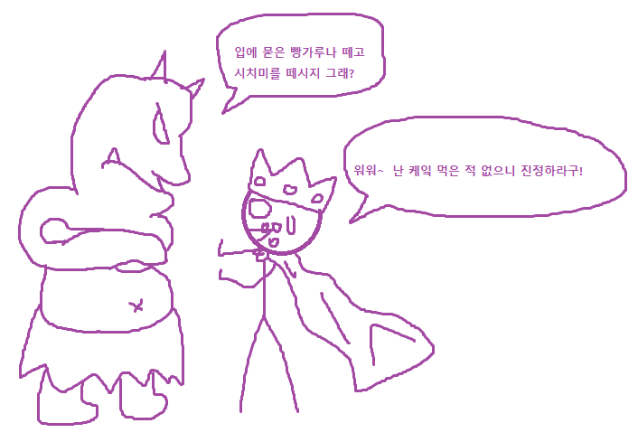

캐릭터 만들기
라이서스20의 캐릭터 생성은 매우 간단합니다. 그저 간단한 캐릭터 묘사(생김새, 설정, 이름 등)와 클리셰를 정하면 됩니다. 원조 라이서스라면 여기서 끝이지만 라이서스20은 여기서 각 클리셰 별로 속성과 장비를 부여합니다. 그 뒤 원한다면 상세설정과 문제, 치트키, 나쁜 클리셰를 정해서 캐릭터를 조금 더 수정할 수가 있습니다. 아직 뭐가 뭔지 모르면 걱정마세요. 이제부터 순서대로 모두 설명해드리겠습니다. 아래 캐릭터 만들기 요약 리스트에서 기본적으로 5번까지는 반드시 필요한 요소지만 6번부터는 선택사항입니다.
- 캐릭터 구상
- 클리셰 정하기
- 속성 부여
- 장비 부여
- 드라마 포인트
- 상세설정과 문제 작성
- 나쁜 클리셰 정하기
- 치트키 제작
클리셰
클리셰(Cliche)라는 말을 우리는 여러 창의적 컨텐츠에서 많이 접해보았습니다. 대개 영화나 소설 같은 곳에서 나오는 가상의 캐릭터가 틀에 박힌 듯한 설정을 가진 것을 클리셰라고 부릅니다. 라이서스에서도 클리세는 이와 비슷한 의미를 가집니다. 클리셰는 라이수스를 표현하는 대표적인 중심 시스템 개념으로 해당 캐릭터가 어떤 인물이고 무엇을 할 수 있는 지는 이 클리셰가 정해줍니다. 클리셰는 하나의 통합된 성격을 뜻하고 캐릭터는 게임을 하면서 자신이 가진 클리셰에 포함되는 모든 종류의 행동을 할 수 있습니다. 처음 캐릭터를 만들 때 캐릭터 점수(CP)를 10점을 받습니다. 그 다음엔 CP 10으로 원하는 식으로 클리셰에 투자합니다. 시작 때는 가장 높은 클리셰가 4점을 초과하면 안됩니다. 또한 후에도 클리셰의 최고 점수는 6이여야만 합니다. 반드시 클리셰 하나는 다른 클리셰보다 더 높은 상태여야 합니다. 게임에 사용 되는 옵션 룰의 사용 여부에 따라서 시작 점수로 더 가능한 것들이 있으나 이는 후에 설명하겠습니다.

(캐릭터 예시) 아서 펜드래곤: 승리의 검 엑스칼리버를 뽑아 든 최고의 기사이자 모든 기 사들의 왕인 대영웅. 클리셰: 최고의 기사(4), 브리튼의 왕(3), 켈트족의 영웅(3)
원조일 경우 여기까지면 캐릭터 완성입니다! 라이서스20도 클리셰를 정했다면 캐릭터 만들기 절반 이상은 끝난 셈입니다. 라이서스20은 20면체 주사위(d20)을 주로 사용하는데, 클리셰는 바로 이 d20을 도와주는 수정치 역할을 하기 때문에 어떤 일을 더 잘하는 지 보여 줍니다. 예를 들어서 아서가 적 기사와 결투를 할 때면 '최고의 기사' 클리셰를 사용해 판정에 +4를 받습니다. 켈트족의 민심을 사로 잡는 데엔 '켈트족의 영웅' 클리셰를 사용해 판정에 +3을 받습니다.

속성
속성은 각 클리셰에 속해있는 요소로 클리셰 안에서도 더 잘하는 무언가를 뜻합니다. 속성은 클리셰마다 해당 클리셰의 점수만큼 가지며 각 속성은 원래 클리셰 점수에 더불어 +2를 판정에 더 더합니다. 아서왕의 경우 '켈트족의 영웅(3)'이 3점이니 그 안에서 속성 3개를 정할 수 있습니다. 대충 켈트족 전통곡, 숲의 지식, 들짐승 사냥 이렇게 3개로 정하면 대개 켈트족의 영웅 클리셰를 사용할 때는 +3이지만 위 3개의 속성과 연관된 일을 할 때면 +2를 추가해서 +5로 판정하는 것입니다.
장비
라이서스에서 장비는 복잡하게 다루지 않지만 각 클리셰 별로 대표하는 대표장비는 꼭 가지고 있습니다. 대표장비는 각 클리셰마다 무료로 하나씩 받으며 반드시 도구가 아니더라도 재산이나 동료, 지위 등 자신의 곁에 있거나 소유하고 있는 개념입니다. 이러한 대표장비는 해당 클리셰와 연결되어 있습니다. 아서왕의 경우 최고의 기사에 엑스칼리버, 브리튼의 왕으로 브리튼의 영토, 켈트족의 영웅으로 켈트민족을 가지고 있을 수 있겠지요. 대표장비 외에 기타 잡다한 장비를 라이서스에선 현실적으로 꼼꼼히 따지지 않습니다. 그러니 일상적인 것과 그 캐릭터와 어울리는 것은 대개 모두 이미 소유하고 있는 것으로 칩니다.
조심 해야 할 것은 이야기 진행에 따라서 받은 대표장비가 망가지거나 사용불능 상태가 되거나 잊어 버릴 수도 있다는 것이고 더불어 그럴 경우 원래 클리셰의 절반(반올림) 패널티를 받습니다. 아서가 최고의 기사 클리셰의 대표장비인 엑스칼리버를 성에 두고 온 상태에서 적장과 결투를 한다면 원래의 점수인 4점이 아닌 2점을 받습니다. 허나 이런 점은 GM의 허락 하게 그나마 엑스칼리버와 비슷한 '장검'을 가지고 싸우면 패널티를 안받게 할 수도 있습니다.
저런 일반적인 장비 외에도 특수장비라는 것이 있는데 이들은 추가 주사위 점수를 줄 수 있는 것들입니다. 예를 들자면 ‘고대의 명검’이라는 특수장비는 일반적인 ‘장검’보다 좋고, 그럼으로 ‘고대의 명검’에는 ‘해당 장비를 전투에 사용 시 클리셰에 점수 +1’ 따위의 보너스가 달리는 것이죠. 그런 특수 장비는 대개는 게임 내에서 발견하게 되겠지만 상황에 따라서는 GM이 처음부터 줄 수도 있습니다.
드라마 포인트
드라마 포인트(DP)는 캐릭터가 좀 더 극적인 실력을 발휘할 수 있게 받을 수 있는 요소로 각 캐릭터마다 매 세션 3점을 받습니다. DP는 언제든지 1점씩 소모해서 특수한 힘을 발휘하는데, 이는 아래와 같습니다. 원한다면 매 세션 받는 DP의 개수를 줄여서 개수당 CP 1점을 더 받을 수 있습니다.
- 판정 전에 사용해 판정에 유리를 받음.
- 판정 전에 사용해 판정에 +2를 더함.
- 판정 후 사용해 재판정 가능.
- 판정 전 사용해 조사 관련 행동을 무조건 성공으로 치고 단서를 얻는다.
- GM과 상의 해 이야기에 영향을 주는 요소를 만든다.
상세설정과 문제 작성
라이서스는 쉽게, 빠르게, 대충대충 캐릭터를 만들 수 있다는 장점을 가지고 있긴 하지만 PL이 공을 들여서 캐릭터의 배경이나 성격 등 기다란 상세설정을 짜면 그에 대한 보답으로 CP 1점을 추가로 줍니다. 또한 그 캐릭터가 가진 문제를 하나 정하면 캐릭터의 입체감도 더해지고 이야기거리도 더 생기기 때문에 CP를 1점 또 추가해줍니다.
나쁜 클리셰 정하기
문제가 이야기적으로 캐릭터의 안 좋은 점을 부각시켜줄 점이라면 나쁜 클리세는 조금 더 시스템적으로 캐릭터의 단점이나 문제점을 나타내는 것입니다. 나쁜 클리셰는 최대 4점까지 부여 가능하며 일반 클리셰와는 다르게 나쁜 클리셰는 판정에서 점수만큼 뺍니다. 그리고 나쁜 클리셰는 대표장비와 속성을 받지 않습니다. 물론 나쁜 클리셰를 받는 만큼 더 얻어지는 것도 있습니다. 바로 투자한 나쁜 클리셰 점수만큼 CP를 추가로 받습니다.
 아서는 나쁜 클리셰로 '형편 없는 거짓말쟁이(2)'를 가지고 있습니다. 오우거의 케잌이 맛있어 보여 몰래 훔쳐 먹었지만 후에 오우거가 돌아와서 추궁하는데 거짓말 판정을 합니다. 허나 아서는 거짓말에 어울리는 일반 클리세는 없고 그에 대한 나쁜 클리셰만 보여서 d20-2에 판정을 하고 결국 실패합니다. 오우거는 아서에게 몹시 화가 납니다.치트키
치트키는 클리셰나 속성처럼 판정에 직접적인 수치로 잘 하는 것을 나타내는 것과는 약간 틀린 개념을 가지고 있지만 캐릭터에게 좋은 장점을 부여해주는 장치입니다. 치트키는 마치 옵션룰이나 하우스룰처럼 원래는 없던 규칙을 캐릭터만을 위해 만들어줍니다. 이는 밸런스를 위해 GM과 잘 상의해서 만들어야 할것이며 강력함에 따라서 CP 1~2점을 투자해 얻을 수 있습니다. 아래는 그저 치트키의 예시입니다. 원래 규칙이나 아래 예시로 불가능한 일을 내 캐릭터가 하고 싶으면 좋겠다라고 생각할 경우 GM과 함께 잘 만들어 보세요.
- 럭키맨: CP 1 투자당 DP를 매 세션마다 추가로 1점씩 더 얻는다.
- 오버드라이브: DP를 사용해 '더블펌프'를 마음대로 발동 가능.
- 도구는 나의 몸: 클리셰를 하나 정해서 해당 클리셰의 대표장비가 없어도 패널티를 받지 않는다.
- 즉석 회복: GM의 눈치를 보지 않고 대결이 끝나면 자동으로 소모된 클리셰 1점을 회복한다.
- 눈에는 눈: 대결/전투중 딱 한 번 내가 피해를 받을 때 상대도 똑같은 피해를 입힌다.
- 완벽한 순간: DP를 2점 소모해 판정을 무조건 크리티컬로 만든다.
- 구두쇠: 한 세션에 한 번 없어진 대표장비 하나를 어떻게 해서든 되돌린다.
- 강력한 한방: 대결/전투 중 한 번 피해를 2배로 준다.
- 사이드킥: 동료/친구/부하 등 PC를 돕는 PL이 조종하는 조연 캐릭터를 만든다. 사이드킥은 CP 1점 투자당 클리셰 3점을 보유한다. 사이드킥은 PC의 최고 높은 클리셰 점수보다 높을 수가 없다.
- 불굴의 근성: 대결/전투 중 아웃되었을 때 딱 한 번 순수 d20을 굴려서 15 이상이 나오면 클리셰/HP를 1점으로 유지하며 버틴다.
- 맹공격: 대결에서 비겼을 경우 자신이 이긴 것으로 친다.
- 인수인계: 이 치트키를 가진 캐릭터가 리더로 있는 팀이 해체되었을 시 팀은 다른 캐릭터를 리더로 바꾸며 바로 새 팀을 만든다. 해체의 패널티 피해는 무시한다.
- 다재다능: 미흡한 클리셰 사용으로 받는 난이도 상승을 4의 배수로 줄여준다. CP 2점 투자시 3의 배수까지 줄여줌.
- 양민학살: 클리셰 최대치가 1점인 상대와 대결시 무조건 승리.
치트키를 만들 때 아래와 같은 질문을 가져봅시다.
- 어떤 것이 가능해졌으면 좋겠는가?
- 언제 어떻게 발동이 가능한가?
- 사용하기 위해 DP 등 무언가를 소모해야하는가?
- 사용 횟수 등 제한 사항은 있는가?
- CP는 몇 점 투자해야하는가? 1점짜리 치트키면 2점짜리 치트키로 업그레이드가 가능한가?
축하합니다! 여기까지 모두 작성했으면 당신의 캐릭터는 완성되었습니다. 이제 규칙을 숙지하고, 모른다면 GM에게 물어가면서 가상의 세계로 날아가 게임을 즐기시면 됩니다. 앞서 말했듯이 기본적으로는 드라마 포인트까지만 작성을 했다면 캐릭터는 완성입니다. 상세설정과 문제, 나쁜 클리셰, 치트키 등은 부가적인 요소이기 때문에 원하지 않는다면 하지 않아도 되는 선택사항입니다.